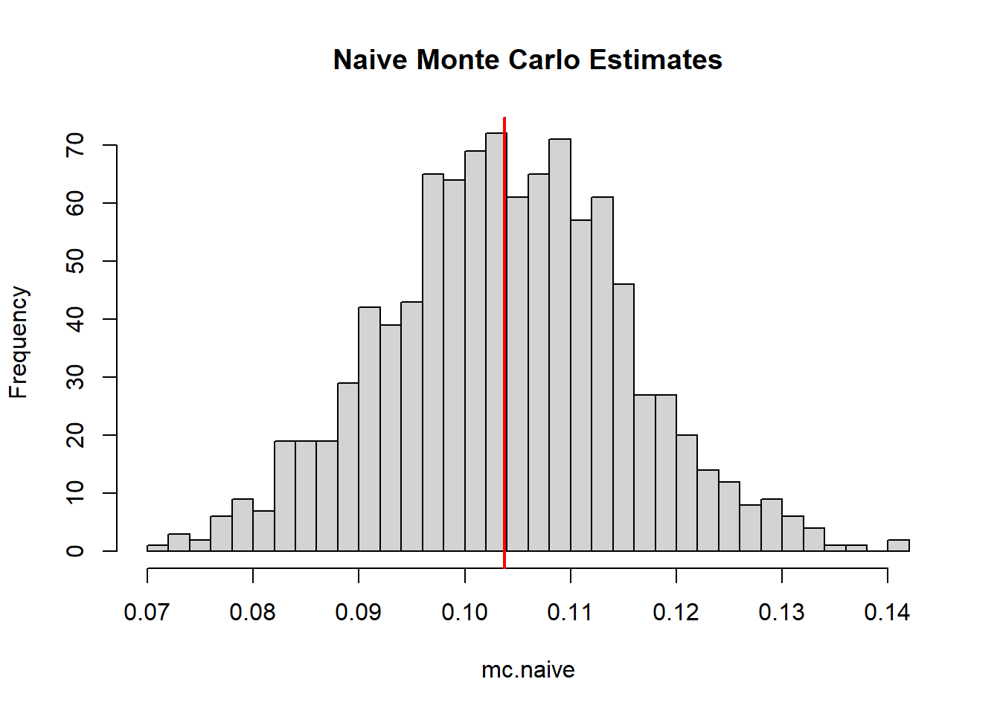
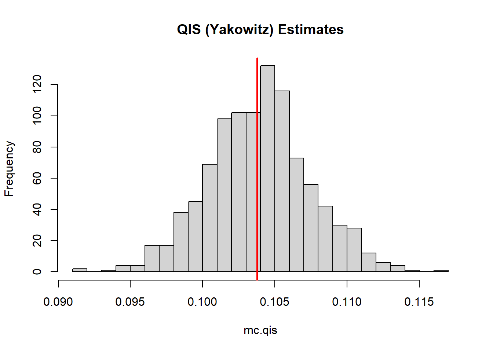
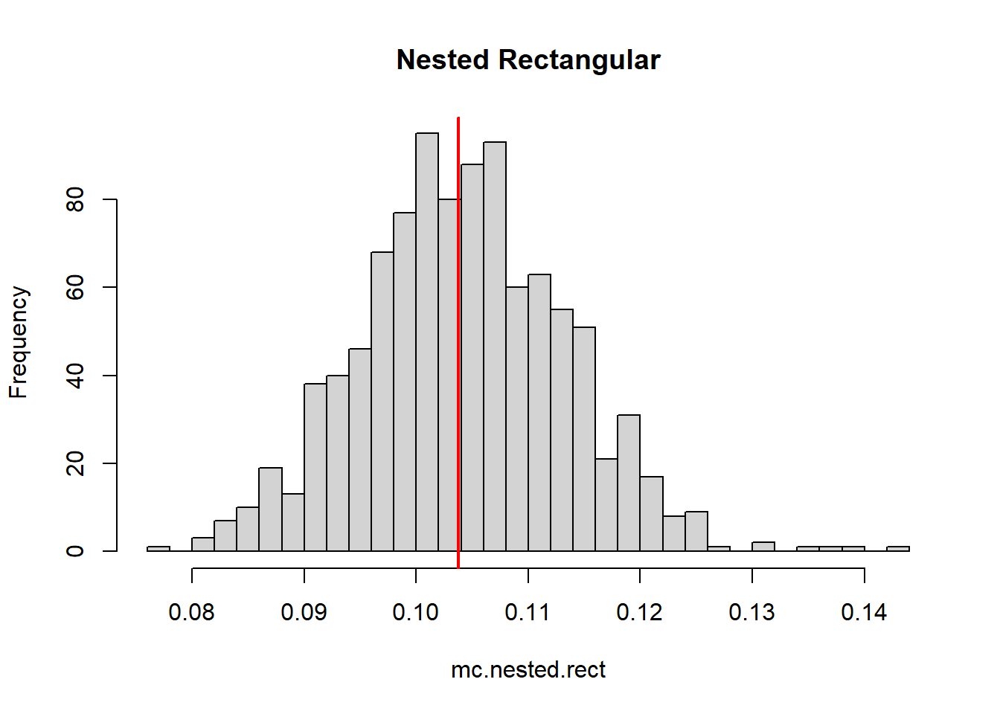
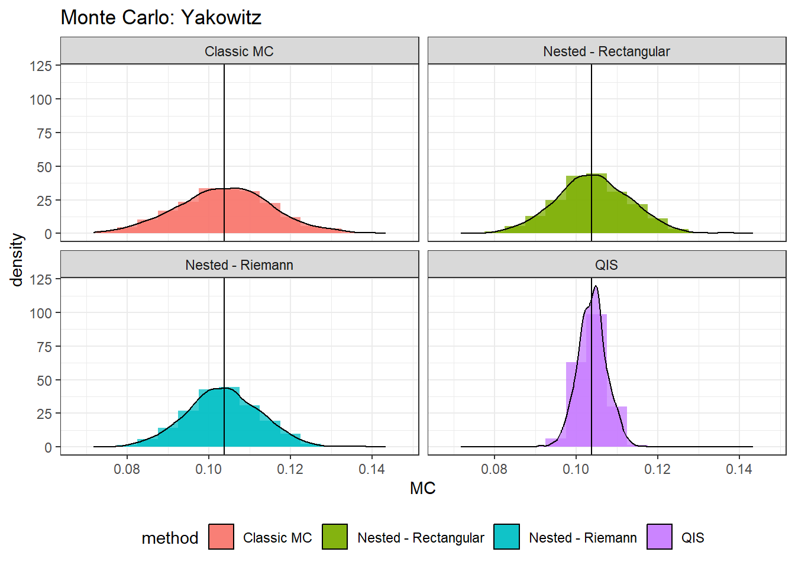

rm(list = ls())
# Set global R options
options(scipen = 999)
# Set the graphical theme
ggplot2::theme_set(ggplot2::theme_light())
# Set global knitr chunk options
knitr::opts_chunk$set(
warning = FALSE,
message = FALSE,
cache = TRUE
)
set.seed(12345)
library(truncnorm)
library(pracma)
library(ggplot2)Quantile Importance Sampling
Demonstration
Example
We take Gaussian likelihood and Gaussian prior,
\[ \begin{align*} L(x \mid \mu_1, \sigma_1) & = \frac{1}{\sqrt{2 \pi}\sigma_1} e^{-\frac{(x-\mu_1)^2}{2\sigma_1^2}},\\ p(x \mid \mu_2, \sigma_2) & = \frac{1}{\sqrt{2 \pi}\sigma_2} e^{-\frac{(x-\mu_2)^2}{2\sigma_2^2}} \end{align*} \]
The integral \(Z = \int L(x) p(x) dx\) is available in closed form due to the self-conjugacy property of Gaussian prior with the mean parameter of a Gaussian distribution. To see this, note that we can write the product of two Gaussian density functions in the following way:
\[ \begin{gather} \phi(x \mid \mu_1, \sigma_1) \times \phi(x \mid \mu_2, \sigma_2) = \phi(\mu_1 \mid \mu_2, \sqrt{\sigma_1^2 + \sigma_2^2}) \times \phi(x \mid \mu_{\text{post}}, \sigma_{\text{post}}^2) \\ \text{where} \quad \mu_{\text{post}} = \frac{\sigma_1^{-2} \mu_1 + \sigma_2^{-2} \mu_2}{\sigma_1^{-2} + \sigma_2^{-2}}, \sigma_{\text{post}}^2 = \frac{\sigma_1^2 \sigma_2^2}{\sigma_1^2 + \sigma_2^2}. \end{gather} \]
Integrating the right-hand-side will leave the normalizing constant, here expressed as a Gaussian density itself. Let \(\mu_1 = 2, \mu_2 =0\) and \(\sigma_1^2 = \sigma_2^2 = 1\). The normalizing constant will be:
\[ Z = \phi(2 \mid 0, 2) = \frac{1}{\sqrt{2 \pi} \sqrt{2}} e^{-1} = \frac{1}{2 e \sqrt{\pi}}. \]
Estimation by QIS, NS and Naive MC
We define three essential functions below:
vertical.gridwill generate an \(x\)-grid for integration using either the exponential weights (for original nested sampling), or uniform for Yakowitz (Quantile Importance Sampling. )sQis simply a sample quantile calculator.nested_samplingperforms the nested sampling algorithm: removes the lowest likelihood, simulates a new draw from the constrained prior space and calculates the Lorenz curve.
# Generate grid
vertical.grid = function(l,N,type = NULL){
# "u" - uniform
# "e" - exponential
if(type == "u"){
ugrid = runif(N)
res = c(sort(ugrid),1)
# res = sort(runif(N))
}else if(type == "e"){
res = exp(-(0:l)/N)
}
return(res)
}
# Quantile
sQ = function(q,Y){
# q-quantile of Y
N = length(Y)
res = Y[ceiling(N*q)]
return(res)
}
# Nested sampling (normal prior, normal likelihood)
nested_sampling = function(mu1,sigma1,mu2,sigma2,N,tol=0.001){
# "mu1", "sigma1" - likelihood
# "mu2", "sigma2" - prior
Lmax = 1/(sqrt(2*pi)*sigma1)
theta = rnorm(N,mu2,sigma2)
L = dnorm(theta,mu1,sigma1)
phi = NULL
error = 1
while(error >= tol)
{
index = which.min(L)
Lmin = min(L)
phi = c(phi,Lmin)
error = abs(Lmin-Lmax)/Lmax
term = -log(Lmin*sqrt(2*pi)*sigma1)
a = mu1 - sqrt(term*2*sigma1^2)
b = mu1 + sqrt(term*2*sigma1^2)
newTheta = rtruncnorm(1,a,b,mean = mu2,sd = sigma2)
newL = dnorm(newTheta,mu1,sigma1)
theta[index] = newTheta
L[index] = newL
}
return(list(phi=phi, L = L))
}Naive Monte Carlo
# Test example
# Prior and Likelihood
mu1 = 2
sigma1 = 1
mu2 = 0
sigma2 = 1
(trueZ = 1/(2*exp(1)*sqrt(pi)))[1] 0.1037769N = 100
r = 1000
mc.naive = NULL
verbose = FALSE
for(i in 1:r){
if(isTRUE(verbose) && i %% 100 == 0)
cat("Iteration ",i, "\n")
X = rnorm(N,mu2,sigma2)
Y = dnorm(X,mu1,sigma1)
mc.naive = c(mc.naive,sum(Y)/N)
}
mean(mc.naive)[1] 0.1038586hist(mc.naive, breaks = 30, main = "Naive Monte Carlo Estimates")
abline(v=trueZ,col="red",lwd=2)
Quantile Importance Sampling
N = 100
r = 1000
mc.qis = NULL
verbose = FALSE
for(i in 1:r){
if(isTRUE(verbose) && i %% 10 == 0)
cat("Iteration ",i, "\n")
M = 1000
X = rnorm(M,mu2,sigma2)
Y = dnorm(X,mu1,sigma1)
Y = sort(Y)
simu.grid.unif = vertical.grid(l=NULL,N,type = "u")
Lambda = sQ(simu.grid.unif,Y)
mc.qis = c(mc.qis,trapz(simu.grid.unif,Lambda)) ## QIS
}
mean(mc.qis)[1] 0.103908hist(mc.qis, breaks = 30, main = "QIS (Yakowitz) Estimates")
abline(v=trueZ,col="red",lwd=2)
Nested Sampling with exponential weights
mc.nested = NULL
mc.nested.rect = NULL
verbose = FALSE
for(i in 1:r){
if(isTRUE(verbose) && i %% 10 == 0)
cat("Iteration ",i, "\n")
M = 1000
X = rnorm(M,mu2,sigma2)
Y = dnorm(X,mu1,sigma1)
Y = sort(Y)
value = nested_sampling(mu1,sigma1,mu2,sigma2,N,tol = 1e-7)$phi
simu.grid.exp = vertical.grid(length(value),N,"e")
Lambda = sQ(simu.grid.exp,Y)
mc.nested= c(mc.nested,-trapz(simu.grid.exp,Lambda)) ## Nested
mc.nested.rect = c(mc.nested.rect, -sum(value*diff(simu.grid.exp))) ## Rectangular sum.
}
mean(mc.nested.rect)[1] 0.1042129mean(mc.nested)[1] 0.1036886hist(mc.nested, breaks = 30, color = rgb(1,0,0,0.5), main = "Nested Riemann")
abline(v=trueZ,col="red",lwd=2)
hist(mc.nested.rect, breaks = 30, main = "Nested Rectangular")
abline(v=trueZ,col="red",lwd=2)
cat("QIS", sqrt(mean((mc.qis-trueZ)^2)),"\n",
"NS with Riemann", sqrt(mean((mc.nested.rect-trueZ)^2)),"\n",
"NS with Rectangular",
sqrt(mean((mc.nested-trueZ)^2)),"\n",
"NS with Riemann",
sqrt(mean((mc.nested.rect-trueZ)^2)),"\n",
"Naive",sqrt(mean((mc.naive-trueZ)^2)))QIS 0.003550668
NS with Riemann 0.009141388
NS with Rectangular 0.003725771
NS with Riemann 0.009141388
Naive 0.01150038Comparison
library(ggplot2)
mc.data = rbind(data.frame(MC = mc.qis, method = "QIS"),
data.frame(MC = mc.nested.rect, method = "Nested - Rectangular"),
data.frame(MC = mc.nested, method = "Nested - Riemann"),
data.frame(MC = mc.naive, method = "Classic MC"))
(plt <- ggplot(mc.data, aes(MC, fill = method)) +
geom_histogram(alpha=0.75,binwidth = 0.005, position="identity",aes(y = ..density..))+
geom_density(alpha=0.75,adjust = 1, stat="density",position="identity",aes(y = ..density..))+
geom_vline(xintercept=trueZ)+coord_flip()+
facet_grid(~method)+theme_bw()+
ggtitle(paste0("Monte Carlo: Yakowitz")))